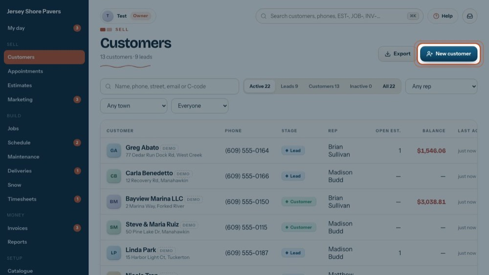
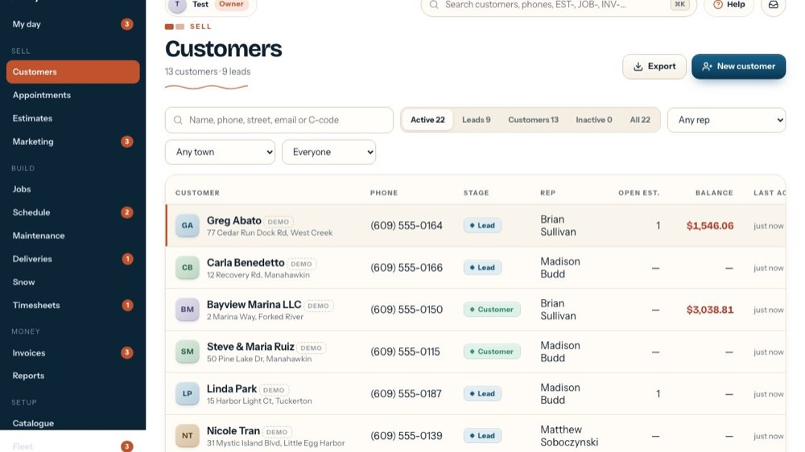
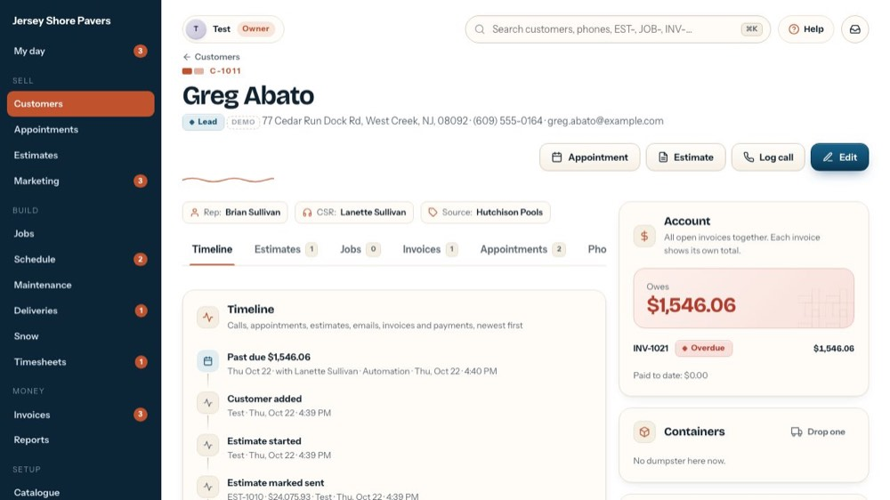
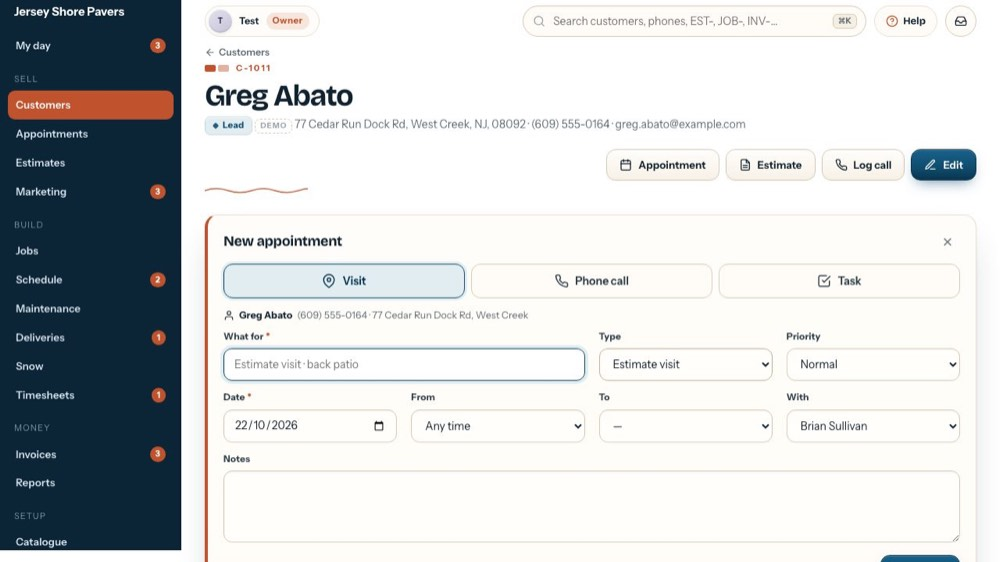
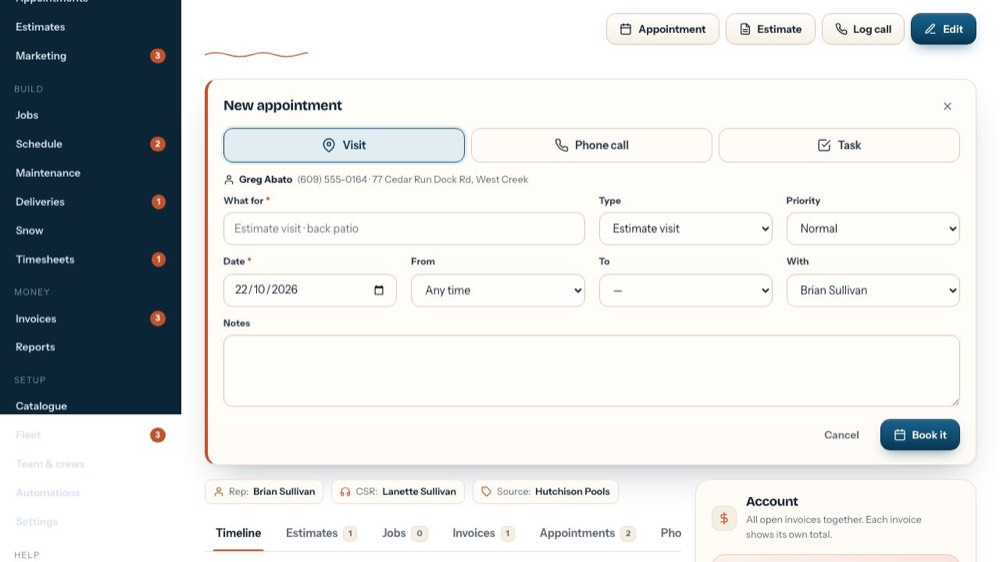
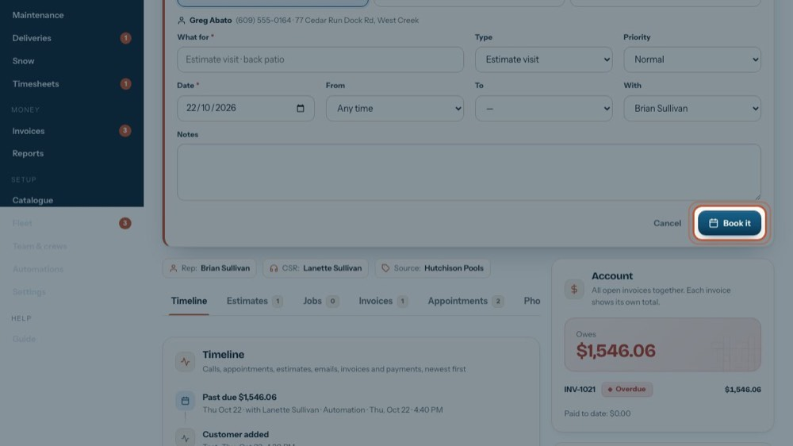

Book a visit, a call back or a task for a customer
In the office app, press Help and type book a visit, a call back or a task for a customer
: the tour plays on your own screen, with your own data.
-
 1
1Find the customer
Search by name, phone or street.
-

2A new caller?
New customer: name, phones, address (the zip fills the town), CSR and salesperson on one screen, and "Book the first appointment now".
-

3Open the customer
Click the customer to open them.
-

4Book it from the customer
Appointment: their name, phone and address come with it.
-

5Visit, phone call or task
A visit has a time and a place, a phone call shows the number to call, a task is any to-do.
-

6When
The day, and a time from / to, or leave it at Any time.
-
 7
7Who goes
Only the people who take appointments are listed (set on Team & crews).
-

8Save it
Book it puts it on their My day and on their phone. The tour doesn't save anything: press it yourself when it's real.